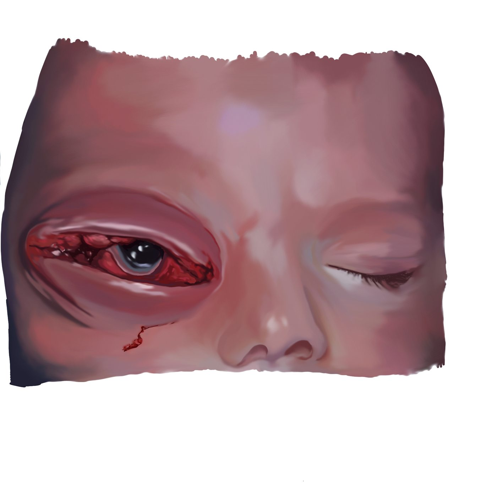
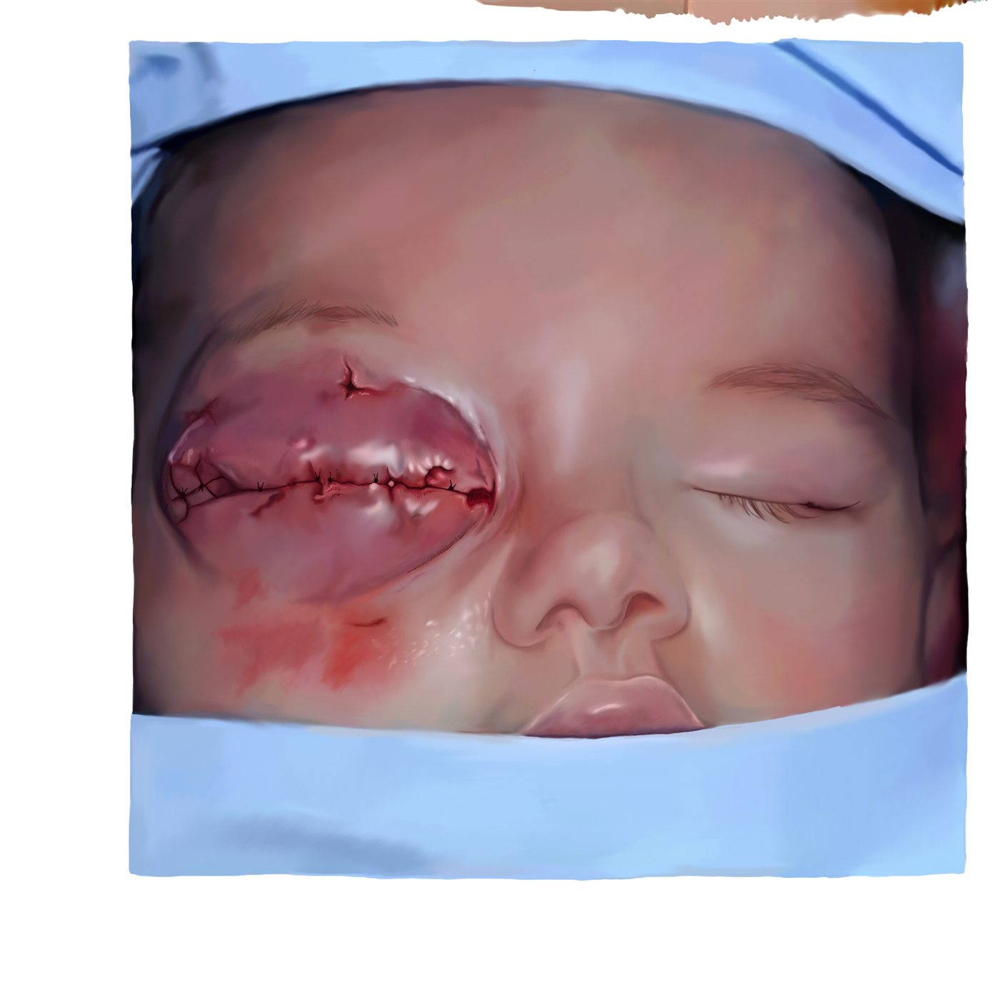
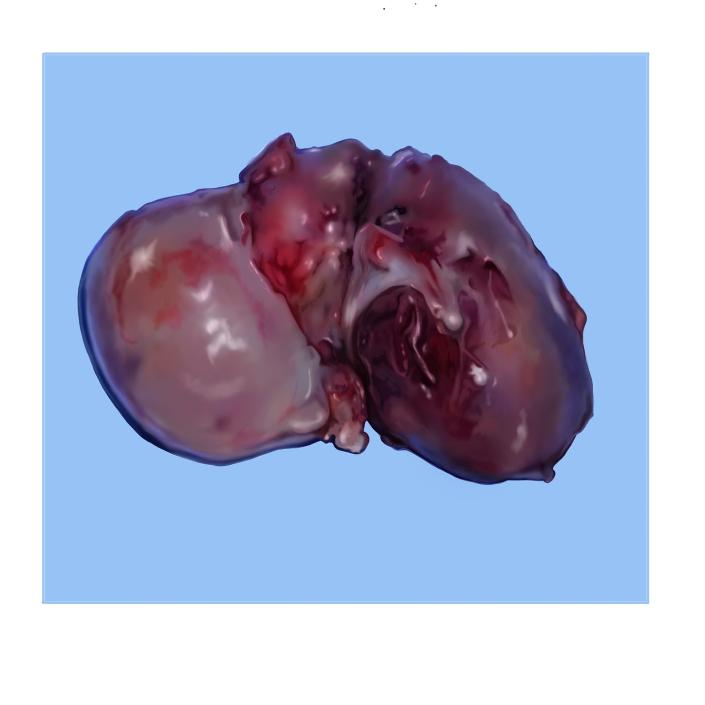
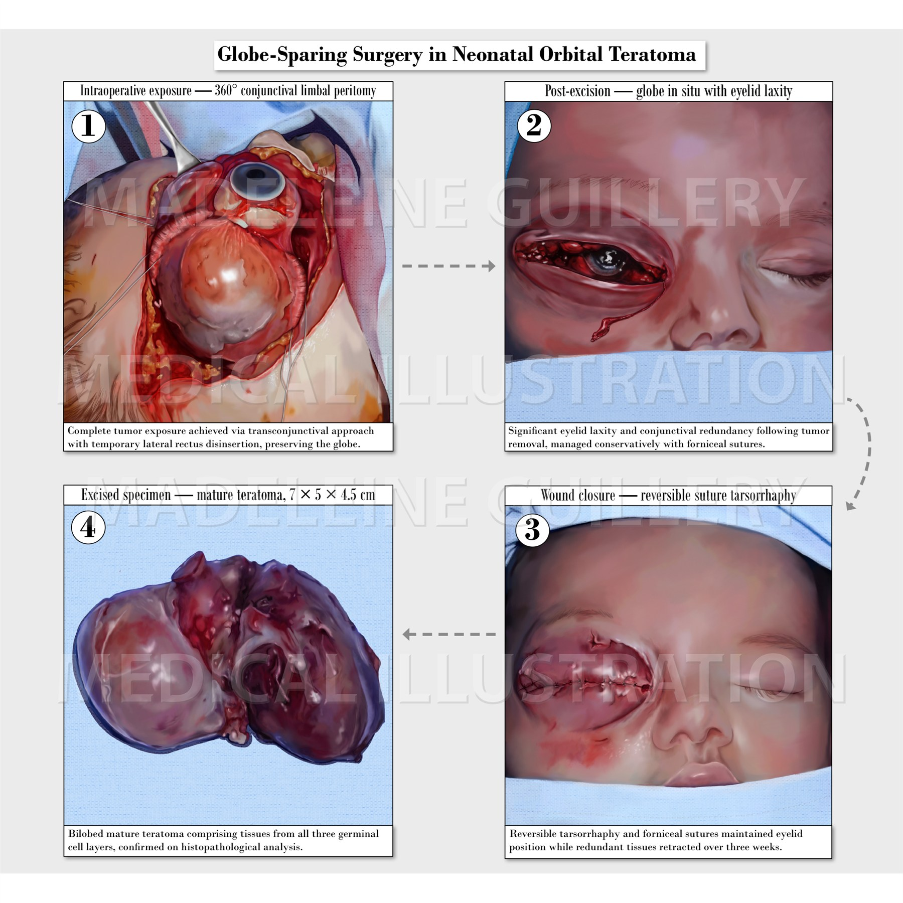

Process




Illustrations · 2026
A four-panel surgical illustration series documenting globe-sparing excision of a congenital orbital teratoma in a neonate.

Piece



This four-panel surgical illustration series documents globe-sparing excision of a congenital orbital teratoma in a neonate — from initial intraoperative exposure of the tumor, through post-excision assessment of the globe, to wound closure and the excised specimen itself. The finished plate above was composed to walk a clinical audience through the full arc of the procedure at a glance; the individual panels below show each stage as it was worked up.
Based on a case report by Dr. Panagiotis Tsoutsanis and Dr. Georgios Charonis, published in BMC Ophthalmology (2021).
Explore More
See more medical illustration work